Artifacts for Sale
Multiple Artifacts that allow people to purchase sets of inexpensive
artifacts. These typically are sets of broken artifacts that have little
value to collectors but are still great for a shamanic research tools.
In fact they may have more strength due to their final position with the
original user. These are set to be affordable for the average person and
those that just want to try this process without a large investment. If
you are a student or one that cannot afford one of these sets
E-mail me and they are yours for free (one set per person). You will
still have to pay the postage as I still need a filter system to show
that you are interested in trying. The set also allow people to
experience the opportunity to connect to more than one person from the
past.
Note:
– I’m not trying to make money on this site. The prices of the artifacts
are set by what they cost me initially.
Mailing is $3.00 for Canada and USA - World wide cost - $4.00 - paid via Pay Pal only - US funds.
All artifacts are guaranteed authentic or money refunded.
|
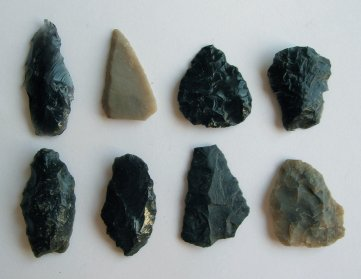 |
Oregon obsidian and chert pieces - small
knifes, a scraper, and projectile points. Left bottom one appears to be the base of a Humboldt point - 5,000 - 1,300 B.P. Longest one measures 1 6/16th" $3.00 for the set or free with shamanic work. (one set per person) |
|
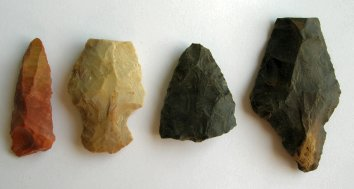 |
Four pieces - a dill tip, projectile tip,
Cypress Creek point 7,000 - 3,000 BP and a Savage Cave point 7,000 - 4,000 BP. Longest one - 2 1/8th" Drills, as their title suggests, are good for "drilling into realities". $4.00 for the set or free shamanic work. |
|
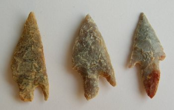 |
African Neolith points 6,000 - 4,000. BP -
longest measures 1 3/8" $3.00 for the set or free with shamanic work. |
|
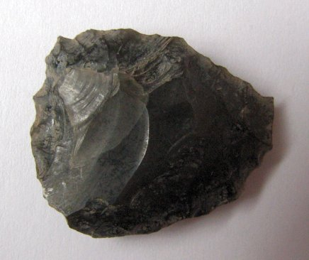 |
Oregon scraper: Qualities - aptitudes, self power.
Material: Obsidian $3.00 or free with shamanic work. |
|
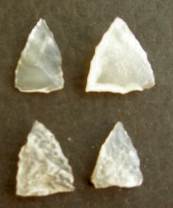 |
Four very small Nenana Complex points -
35,000 -10,000 BP. from China. Made from Quartz. Named from the Alaskan Nenana Valley site - 11,190 BP. - longest one measures 7/16 of an inch. $4.00 for the set or free with shamanic work. |
|
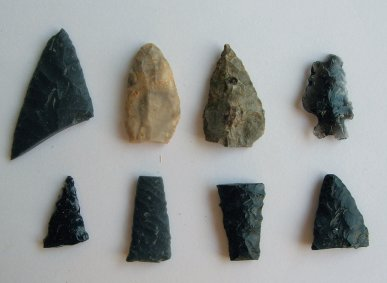 |
Oregon point tips and two bases. Top
right is a Merrybelle Bifurcated point 2,500 - 1,750 BP. Longest measures 1 2/8" $3.00 for the set or free with shamanic work. (one set per person) |
|
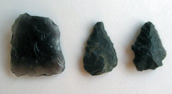 |
Three projectile pieces from left to right: Atlatl Valley Triangular 7,000 - 3,500 BP - obsidian 1 1/4" Projectile tip - slate - age -? Northern Side Notched 9,000 - 3,000 BP obsidian - all from Oregon $3.00 for the set or free with shamanic work. |
|
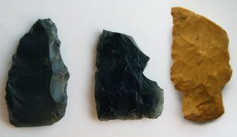 |
One knife, a base from an Atlatl
Valley Triangular 7,000 - 3,500 BP obsidian - both from Oregon
and a Elk River base from Tennessee - 6,500 - 4,00 BP. Longest is 1 5/8" $3.00 for the set or free with shamanic work. |
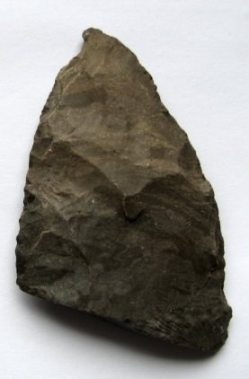 |
Agate Basin tip Material - Chert 2.5 x 1.5 inches $3.00 or free with shamanic work. |
| 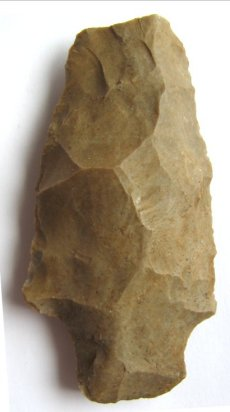 | Palmer - 9,000 - 8,000 BP Material - Chert Found in Tennessee 2.5 x 1.1/4 inches $3.00 or free with shamanic work. |
|
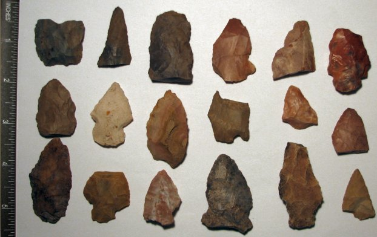 |
Tennessee Artifacts FREE - for all 18 - you pay only for shipping (Canada & USA - $7.00) (one set per person) |
|
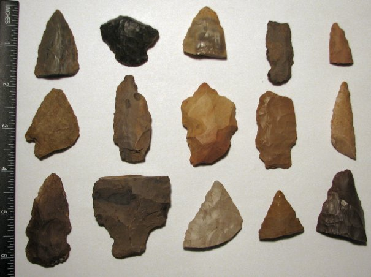 |
Tennessee Artifacts: FREE - for all15 - you pay only for shipping (Canada & USA - $7.00) (one set per person) |
|
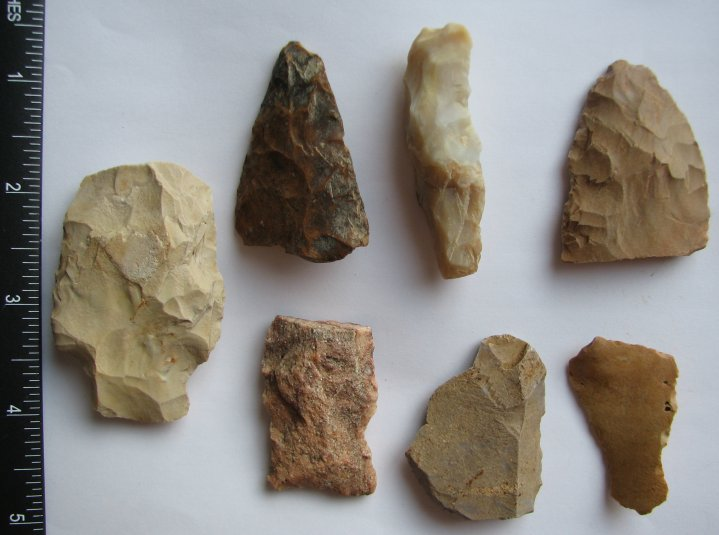 |
Tennessee Artifacts: FREE - for all 7 - you pay only for shipping (Canada & USA - $7.00) (one set per person) |
|
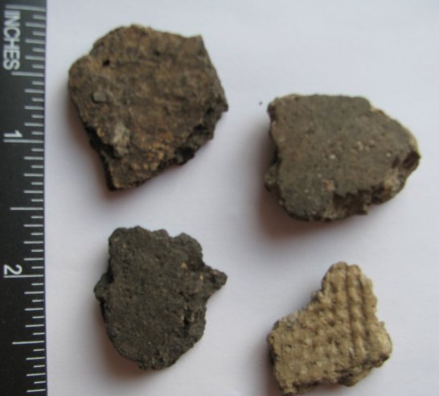 |
Manitoba potsherds $3.00 - for the 4 or free with shamanic work. |
Mailing is $3.00 for Canada and USA - World wide cost - $4.00 - paid via Pay Pal only - US funds. All artifacts are guaranteed authentic or money refunded - you pay for return postage and must be returned within 30 days.
Returns will be accepted due to mistakes on my part, or if the
artifact is found to be altered or non authentic by a respected
Authenticator. Others will be handled on a case to case basis.
Typology is a personal opinion, Please ask questions if you are
unsure of choice of typing on a piece. |
|
Site Map E - Mail me |
|